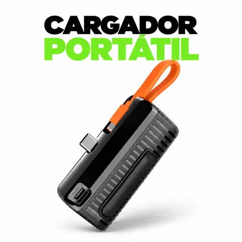

Mini Cargador Portátil 5000 mAh
Ultra compacto, 5000 mAh y cable integrado. Energía de reserva que cabe en el bolsillo.
15,00 €

Black Friday
Diseño ergonómico y manos libres para incorporarlas a tu rutina de autocuidado en casa. Un momento de calma en solo 10 minutos al día.
Impuestos incluidos. Envío en 24/48 h.
| Tecnología | Luz LED roja (630 nm) + microcorrientes (EMS) + vibración sónica suave |
|---|---|
| Batería | Polímero de litio integrada, 90 mAh, 3,7 V |
| Material | ABS de alta durabilidad y almohadillas conductoras suaves con la piel |
| Peso | Unos 45 g |
| Sesión | 10 minutos con apagado automático |
| Carga | USB (cable incluido) |
Por seguridad, no se pueden encender mientras están conectadas al cable de carga.
Enviamos en 24/48 horas. Dispones de 30 días desde que recibes el producto para solicitar la devolución. Consulta las condiciones en nuestra política de devoluciones.
¿Cuánto dura cada sesión?
Unos 10 minutos. El dispositivo se apaga solo cuando termina el temporizador.
¿Cómo se carga?
Por USB con el cable incluido. Por seguridad, no se puede encender mientras está conectado a la carga.
¿Es un producto sanitario?
No, es un producto de cuidado personal. Si estás embarazada, llevas marcapasos u otro dispositivo implantado o tienes alguna condición médica, consulta con tu médico antes de usarlo.
¿Y si no me convence?
Dispones de 30 días desde que lo recibes para solicitar la devolución, según nuestra política de devoluciones.
Importante. Es un producto de cuidado personal, no un producto sanitario. Si estás embarazada, llevas marcapasos u otro dispositivo implantado, o tienes alguna condición médica, consulta con tu médico antes de usarlo.
También en Zeltrix

Ultra compacto, 5000 mAh y cable integrado. Energía de reserva que cabe en el bolsillo.